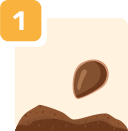
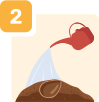
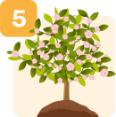
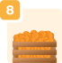

Нижче описаний процес: від
ідеї до поширення результатів кампанії

Ідея: Озвуч свою мрію

Знайди 20+
однодумців (голосування за мрію)
Юридичне: чи треба дозвіл? Хто може стати партнером?
Підготовка до кампанії (ми допоможемо оформити проект)

Старт кампанії зі збору ресурсів і волонтерів – успіхів!
Щоб мрія дозріла, потрібно активно розповідати
про мрію
Реалізація мрії –
наступний крок після 100% залучених ресурсів.

Коли проект реалізовано, поділіться
результатами, щоб надихнути інших
Оберіть мрію, яку ви готові підтримати на її шляху
до втілення
Віддайте свій голос за одну з мрій
0(0%)
0(0%)
0(0%)
0(0%)
0(0%)
Проголосувати
Дякуємо. Ваш голос зараховано
Проекти, які чекають на втілення
Наші контакти: support@citydream.pp.ua
Made
with <3 by GeekHub
Цей веб-сайт був створений за підтримки Європейського Союзу в рамках Стипендіальної програми для лідерів громадянського суспільства країн Східного партнерства.